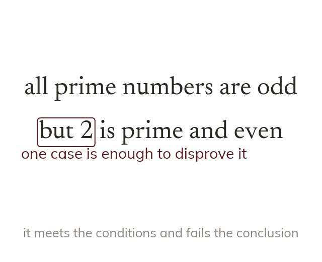

What a counter-example does
A counter-example meets a statement's conditions but fails its conclusion. Just one disproves the whole statement. No number of supporting examples can prove an 'always' statement.
A counter-example is a single case that meets a statement's conditions but not its conclusion. Finding just one disproves the whole statement - no number of supporting examples can prove an 'always' statement true, since the very next case might be the counter-example.